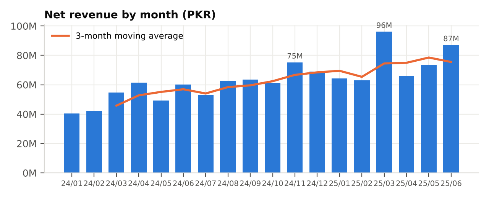
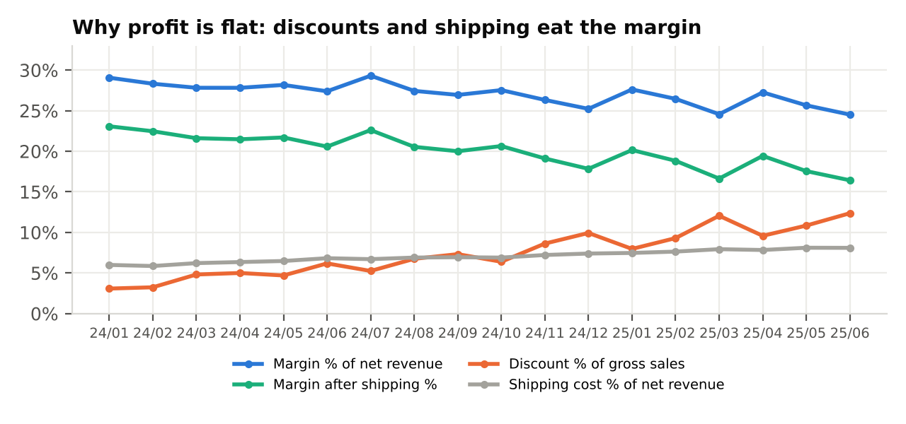
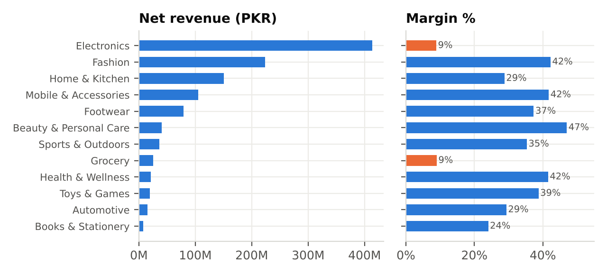
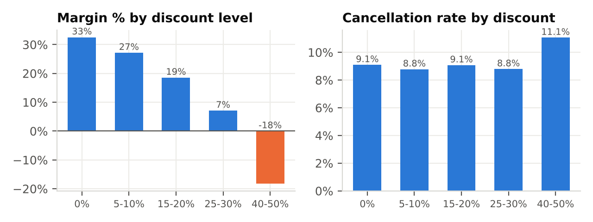
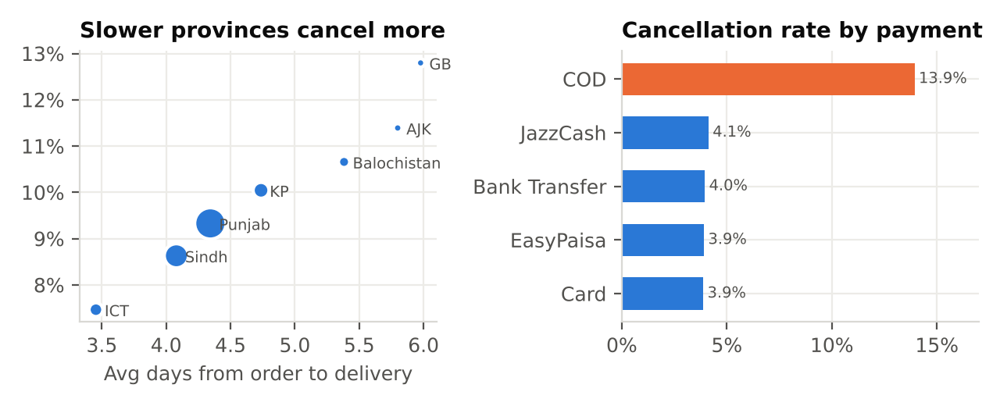
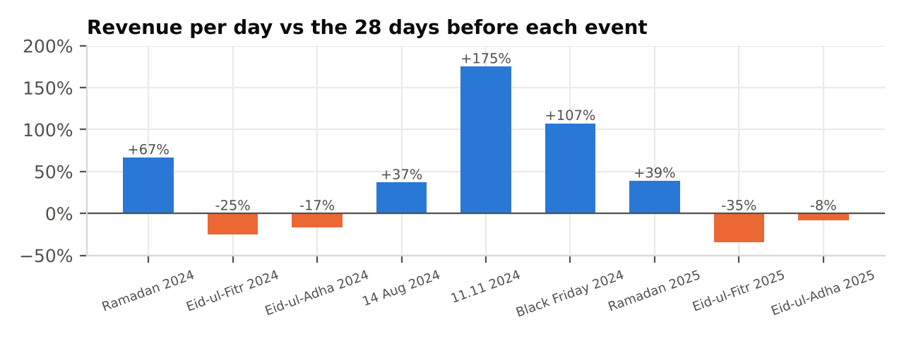

Jan 2024 - Jun 2025 · 160,000 orders · all figures in PKR from the cleaned warehouse, using the metric definitions in the brief.


| Question | Answer (from the data) |
|---|---|
| 1. Which categories generate the highest revenue and margin? | Electronics leads revenue (PKR 413.2M, 36.2% of net revenue) but earns only 8.9% margin. Fashion is second in revenue (PKR 223.3M) and first in margin (PKR 94.3M, 42.2%), followed by Mobile & Accessories (PKR 43.7M) and Home & Kitchen (PKR 43.4M). Highest margin rate: Beauty & Personal Care (47.0%). Grocery (9.0%) is the other low-margin category. |
| 2. Which provinces and cities contribute most / least? Top-5 city share? | Punjab 48.8%, Sindh 28.3%, KP 10.2%, Islamabad 7.3%, Balochistan 3.5%; least: Azad Kashmir 0.9% and Gilgit-Baltistan 0.8%. Top cities: Karachi 18.9%, Lahore 15.3%, Islamabad 7.3%, Rawalpindi 5.1%, Faisalabad 4.7% → top five = 51.4% of net revenue. All 650 locations order something, but the 40 largest cities give 81%; the smallest towns have under 20 orders each (e.g. NagarChak, 4 orders). |
| 3. How does monthly revenue change? MoM growth? | Net revenue rose from PKR 40.4M (Jan-24) to PKR 87.0M (Jun-25): +46% H1-25 vs H1-24, a compound 4.6% per month. MoM is volatile and event-driven: best Mar-25 (+52.7%, Ramadan), Nov-24 (+22.8%, 11.11/Black Friday); worst Apr-25 (-31.5%) and May-24 (-19.7%), the months after Eid. |
| 4. Return and cancellation rates, and their trend? | Return rate 5.19% (valid returns / delivered lines), flat between 4.7% and 5.5% by quarter (Q2-25 is low because recent orders are still in their return window). Cancellation rate 9.16% of orders, rising from 7.9% in Q1-24 to 10.0% in Q2-25. |
| 5. Net revenue vs gross revenue by category? | Gross sales PKR 1,437.4M → minus discounts PKR 115.5M, cancellations PKR 121.8M and refunds PKR 57.8M = net revenue PKR 1,142.3M (20.5% leakage). Fashion loses the most (23.9%, refunds = 9.1% of its NMV) and Footwear 22.4%; all other categories lose 18.7-19.7%. |
| 6. Observed customer lifetime value; repeat purchasing by region / category? | Observed CLV (net revenue per active customer, 18 months) = PKR 36,166 (median 18,383; 4.6 orders; PKR 9,701 margin). Repeat purchase rate 71.8%; the top 10% of customers bring 44.2% of revenue. Regions barely differ (repeat 72.8% North, 72.0% Central, 71.1% South). By category, re-buying the same category varies a lot: Mobile 52%, Fashion 52%, Home 43% vs Automotive 13%, Books 19%. |
| 7. Which RFM segment generates the most revenue, and how large is it? | Champions: 5,512 customers (17.5%) generate PKR 586.9M = 51.5% of revenue (avg 13.4 orders). Loyal Customers add 19.8%. The largest group, Hibernating (9,739, 30.9%), brings only 6.9%; At Risk (1,592) still hold PKR 63.3M. |
| 8. How should sellers be ranked? | Quality score (0-100) = 30% revenue (percentile of log revenue) + 25% low return rate + 25% on-time rate + 20% low cancellation rate, for the 356 sellers with ≥100 delivered lines. Revenue gets the largest single weight because it measures value to the business; the three service measures together (70%) protect customers. Top: Al-Noor Collection 46 (89), Prime Store 57 (87), Lahore Collection 67 (82). Seller tier does not predict quality: Gold, Silver and Bronze all deliver on time 69% of the time with return rates 5.0%-5.4%. |
| 9. How does on-time delivery relate to returns and cancellations? | On-time = delivered within 5 days of ordering (median is 4 days; 5 days covers ~3/4 of deliveries). 68.6% of delivered orders are on time. Late lines are returned more: 5.9% vs 4.9% on time; the rate climbs from ~4.9% (≤5 days) to ~7% (8+ days). Cancellations rise with slow delivery by geography (province correlation 0.98) but not by seller (r = 0.01). |
| 10. Products with high sales and high returns - linked to sellers? | 53 products are in the top revenue quartile with a return rate ≥2x average (≥10.4%): 43 Fashion (abayas, kurtas, lawn suits, polos), 8 Footwear, 2 Electronics. Each is sold by one seller, and 5 sellers account for 63% of their returns (S0203, S0308, S0376, S0310, S0109; return rates 11-16%). Size/fit (16%), not-as-described (15%) and quality (14%) are the main reasons. |
| 11. Do Ramadan, Eid, 11.11, Black Friday show spikes / more returns or cancellations? | Yes for revenue: vs the 28 days before, revenue per day was +67% in Ramadan 2024, +39% in Ramadan 2025, +175% on 11.11, +107% on Black Friday and +37% on 14 August. The Eid days themselves dip (-35% to -8%) and cancellations jump to 10.5%-13.6% (vs ~8.5% before). Return rates stay within normal range (4.4-5.8%). |
| 12. Do discounts raise revenue while cutting margin or raising returns? | Discounting doubled: discounted orders went from 19% to 40% of orders and average depth from 16% to 26%. Baskets are not bigger (gross per order ~PKR 8.6-8.7k) except at 40-50% (PKR 13,616), so discounts mostly give away margin: 33% at 0%, 19% at 15-20%, 7% at 25-30% and -18% at 40-50%. Returns (6.3%) and cancellations (11.1%) rise only at 40-50%. |
| 13. Do slower regions have more cancellations or returns? | Yes. Avg days to delivery and cancellation rate: Islamabad 3.5d / 7.5%, Sindh 4.1d / 8.6%, Punjab 4.3d / 9.3%, KP 4.7d / 10.0%, Balochistan 5.4d / 10.7%, GB 6.0d / 12.8%. Returns rise less (4.8% → 6.0%). Tier-3 towns cancel 12.0% vs 7.5% in metros. (Only 8 provinces - an association, not proof of cause.) |
| 14. Payment methods vs cancellations/returns - could data quality explain it? | COD is 52% of orders and cancels 13.9% vs 3.9%-4.1% for prepaid; 5.6% of COD orders are cancelled after shipping (refused at the door) vs ~1.5% for prepaid. Returns are the same for all methods (5.0-5.3%). Data-quality caveats: 22 raw method labels (e.g. 'COD ', 'Cash On Delivery') had to be unified, 4,815 orders have split payments (2,016 with two methods, so the method depends on the rule used), and cancelled COD orders still have payment rows - the payments file records intent, not cash collected. These blur the exact rate but cannot create a 3.5x gap. |
| 15. Why is profit flat while revenue grows? Three actions. | H1-25 vs H1-24: net revenue +46%, but margin only +35% and margin after shipping +21%. Margin fell from 28.0% to 25.8%: category mix explains +0.1 pp, the drop inside every category -2.3 pp. Causes: (1) discounts rose from 4.7% to 10.6% of gross sales in all categories; (2) free shipping grew from 6.3% to 7.9% of revenue; (3) 36% of revenue is Electronics at 9% margin; (4) rising COD cancellations waste courier fees (PKR 3.3M on cancelled orders). See actions below. |
Method notes. Net revenue = NMV - refunds of valid (non-Rejected) returns; return rate = lines with a valid return / delivered lines (non-cancelled lines of orders not still In Transit); cancellation rate = cancelled orders / all 160,000 orders after duplicate removal; margin = net revenue - cost of goods on kept lines; AOV = NMV / non-cancelled orders. Data was cleaned by code (see Data Quality Report): duplicates removed, customers and products de-duplicated, corrupted prices/quantities/dates repaired from other columns. Small differences from other teams' figures can come from these documented cleaning choices. Correlations describe associations in this dataset, not proven causes.



